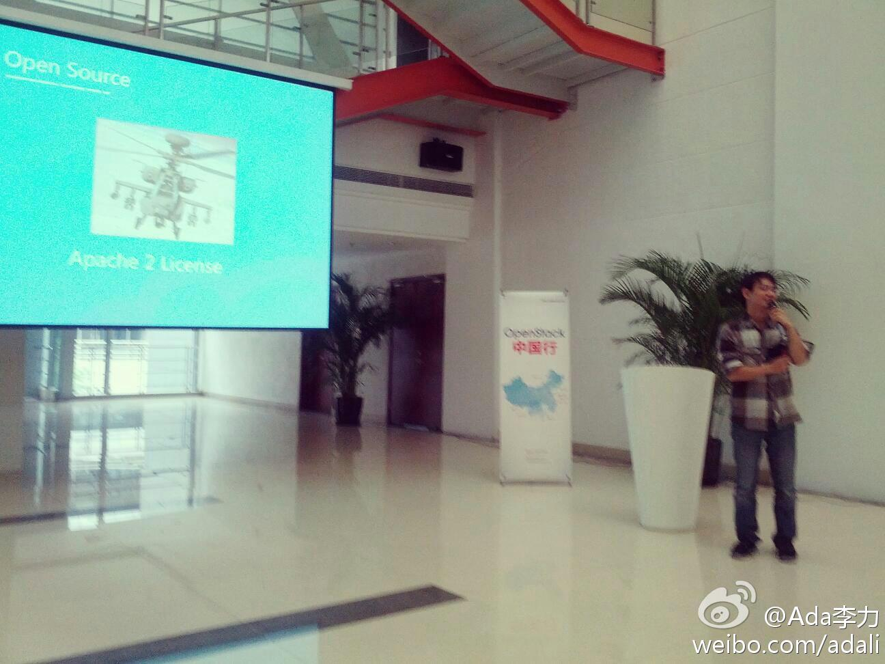
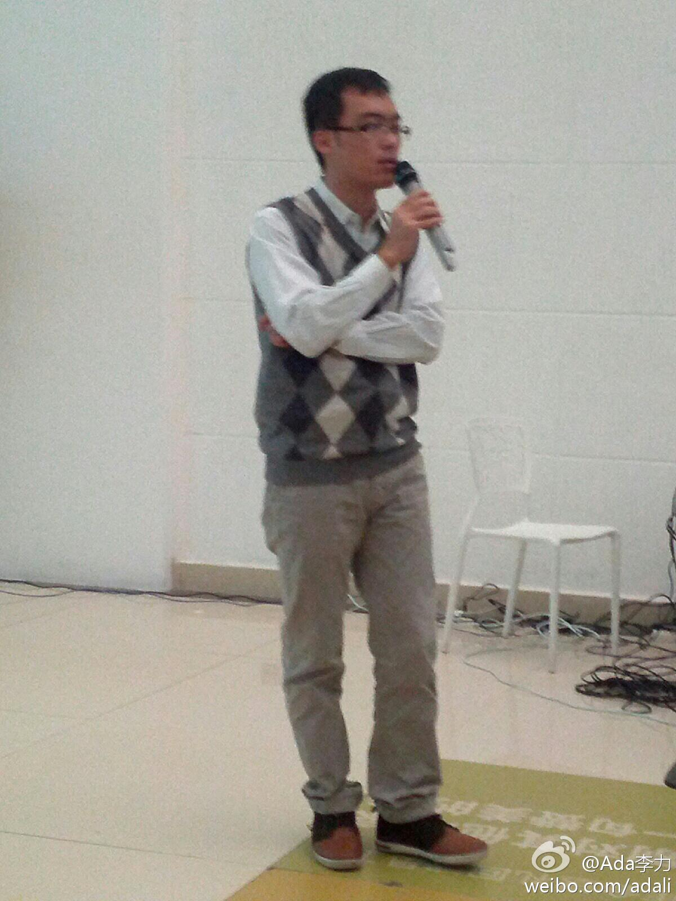
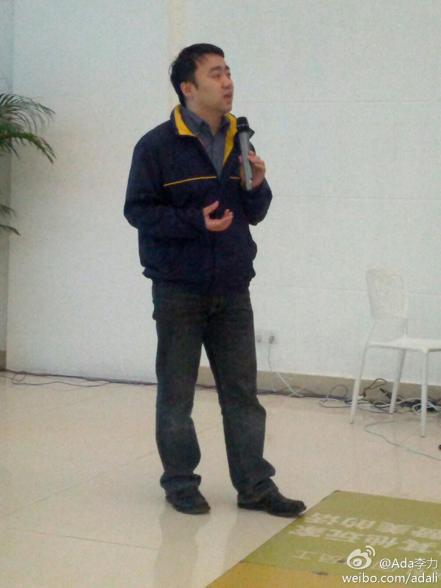
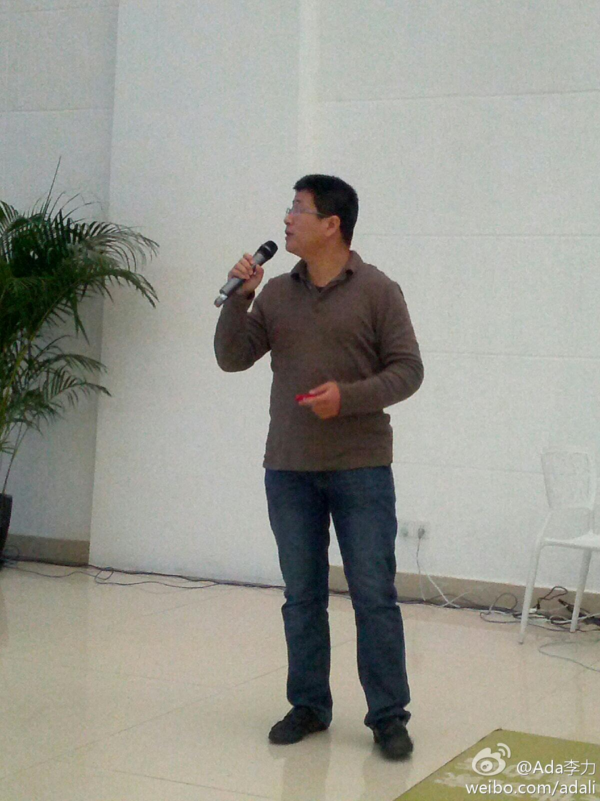
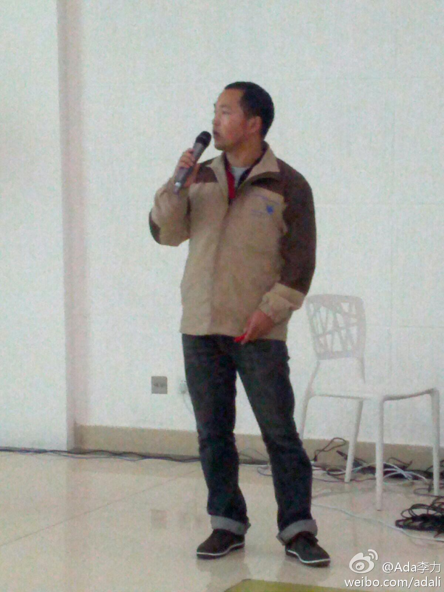

#OpenStack中国行#上海站 @程辉 认为ClouStack比较成熟，是优势也是劣势。劣势是巨头进入早，占优势多，其它中小企业参与难度大。OpenStack这么火，是因为大家从不成熟中才看到希望。 
西安站相对其它站来说，讲师不够丰富，致歉//@程辉: 华为有西安甚至全国最大的OpenStack开发团队，近20个华为的听众，却没有一个华为人愿意当讲师，外地讲师和志愿者千里迢迢过去分享还抱怨内容不够丰富，暴露了华为赤裸裸的吸血鬼形象。 //@孔令贤HW:比起其他城市的中国行，西安站真的就是走了个形式@程辉:#OpenStack中国行# 上海站，现在出发了。这次有不少新料，保证是没听过的，其它讲师内容也很干，上海同学没报名的抓紧了：网页链接
现场有视频直播。//@COSUG: //@COSUG:#OpenStack中国行#活动时间地点：11月10日13:00 杨浦区国定东路200号3号楼 报名链接：网页链接 视频直播：网页链接@COSUG:#OpenStack#中国行上海站讲师推荐 演讲人：汪亚光 英特尔亚太研发中心高级系统性能工程师，目前专注于云存储基准测试工具的开发与Openstack Swift云存储解决方案的系统优化，之前曾有过企业数据库系统的优化以及SAP ERP和电信OSS方面的开发经验 演讲主题：Swift Performance Measurement and Tuning
罗钟悦的汉语不错，稍有些口音。他介绍自己是OpenStack的full time contributor. //@COSUG: @zhongyueluo @COSUG:#OpenStack#中国行上海站 讲师推荐 罗钟悦于韩国出生，在美国长大，目前在中国打拼，曾在#OpenStack开发者大会# 上分享过Nova代码分析 视频链接： 网页链接 本次活动时间：2012年11月10日13:00 - 18:00 地点：创新工场，杨浦区国定东路200号，3号楼 报名地址：网页链接
@ben_杜玉杰 现场调查，问在场听众有那些人安装过OpenStack, 只有五个人举手，还包括一个讲师。来听说明感兴趣，没装过说明安装不是那么方便。那这种技术活动确实是推广体验平台的好机会 stacklab.org 和 trystack.cn 
Eric 今天的题目是《Swift and Object Storage》, 他介绍自己说做过东西比较多，写过十年代码，也做过行业市场和管理。@COSUG:#OpenStack#中国行上海站 讲师推荐 @Eric雪菲 最新F版Swift的关键新特性探讨：网页链接 活动时间：2012年11月10日13:00 - 18:00 地点：创新工场，杨浦区国定东路200号，3号楼 报名地址：网页链接
@Eric雪菲 介绍自己时，还用到了CSDN上OpenStack专页上的截图，上面有对他文章的引用和头像。这是@Adaela可爱多 维护更新的。不过目前OpenStack专区已转到ITEYE群组 网页链接 因为这个产品更方便大家的参与
来自DELL 的石珉 @高登火车 只讲了二十分钟，说是讲讲云计算中对生态链的理解，当然提到戴尔的优势，直销，针对中小客户。总共三页Slide, 其中一页是句问话: How to monetize on OpanStack? 
回复@白剑波james:中国好声音决赛中女主持把`加多宝`说成`王老吉`，然后就消失了。那位兄弟还好吧。 //@白剑波james:一个兄弟从S去了M，第二周见客，讲到开发平台，脱口而去J2EE就是好，然后是理由和分析，一分钟后惊醒......出来下楼先给自己一嘴巴---:抱歉，此微博已被作者删除。查看帮助： 网页链接
来自英特尔亚太研发中心的汪亚光 的题目是<Measuring Swuft Performance with COSBench>. 讲得很技术。话说这次#OpenStack#中国行上海站上，来自Intel的讲师有四个。 
这种到竞争对手去的事例，职业经理人中太常见了，因为公司就那么多。为什么技术人员想不开? 把这当作个信仰问题？ @老赵 //@qyjohn_: 把工作当作生活的一部分。把业务上的竞争对手当作你的下家看待。就这么简单。 //@Ada李力:檫，我还以为说的是我之前所在的部门和老板，从Sun去Microsoft不少啊。---:抱歉，此微博已被作者删除。查看帮助： 网页链接
//@朱翔Maple: 因为技术人员把他选择的技术当作初恋，职业经理人恰好相反 //@Ada李力:这种到竞争对手去的事例，职业经理人中太常见了，因为公司就那么多。为什么技术人员想不开? 把这当作个信仰问题？---:抱歉，此微博已被作者删除。查看帮助： 网页链接
#OpenStack#中国行上海站，来自Intel的辑友最后一个出场。讲题是`Nova和虚拟机管理`，他和其它讲师有两个不同，一是他在OpenStack之前, 是研究桉树的，二是他的演讲稿是全中文的。 
多谢改正。//@HZT-intel:要替代的是nova-volume@Ada李力:#OpenStack#中国行上海站，黄志腾@HZT-intel 介绍了Cinder - Block Storage As A Sevice . 这个貌似要替代Folsom里的Nova
不知道是否有人羡慕她?@it女民工:法国前女司法部长达蒂忒火爆了，在任期间生了个私生子，没披露父亲是谁，最近跟一个法国富商打官司要求其做亲子鉴定被拒绝，然后富商的律师爆料说她在怀孕期间拥有多达8个情人，还有电视节目主持人、部长、西班牙前首相、萨科齐的一个兄弟、卡塔尔首席检察官和“奢侈品帝国”的继承人等。
今天晚上吃饭，同桌有两人都在微软工作过，其中一人说离开微软是因为唐骏的缘故，当时的微软年会能喊出"唐骏万岁"的口号，真是听得我都要吐了。饭桌上郭总说能做到唐氏位置，被人骂也值了。同桌也有佩服唐氏的。── 我大概是out了，我即不会佩服唐骏这样的人，也没觉得他的位置有多让人羡慕。
右边三个真会埋汰人。//@贺辉群DavidHe:毕竟人家也养了那么多人，为就业做了贡献！//@中间件老王:还是毛胚房//@毕垦: 这么大个公司，干了三个Q，挣的钱在北五环买了个两室一厅。操！//@杨嘉伟: 转发微博@IT红点:#用友#2012年前三季度累计实现营业收入24.57亿元，净利润为317.83万元，同比大幅减少96.5%。其中第三季度亏损1.31亿元。据了解，时下国产ERP厂商面临分支机构过度扩张、人力成本快速上升、软件产品理念滞后、中小企业客户生存困难、大项目交付难等挑战。而近几年来，用友向云端转型动作过于缓慢。